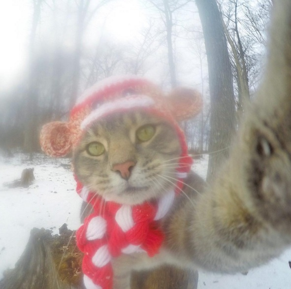
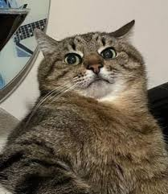
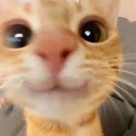
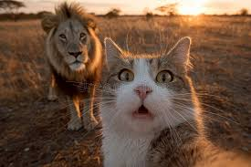
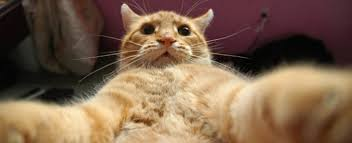
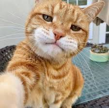

Ласкаво просимо в котячий світ
Забудьте все, що ви знали про котів! У статті
"Коти-блогери: Селфі з шести життів"
ми
зібрали докази
того,
що
пухнасті інфлюенсери не такі прості, як здається.
Кожне
селфі,
відзняте ними, — це не просто фото, а частина великої, таємної
історії.
Що ж, час перейти від слів до справи. Ми зібрали 9 фото-доказів,
які розкриють вам
справжню сутність котячих селфі. Кожен
знімок —
це унікальна історія, і ми починаємо наше розслідування прямо
зараз
-
Коли ти таємний агент під прикриттям Санта Клауса
Я просто хотів перевірити, чи немає білок, що ховаються під ялинками. І, так, я знаю, що ви дивитесь. І так, я знаю, що ви ніколи не дізнаєтесь, що я шукаю
-
За цим обличчям криється таємниця
Думаєте, це просто кіт на дивані? Помиляєтесь. У цей момент я розгадав, чому пульт завжди ховається під подушкою, і хто насправді керує домом. На жаль, я не можу розкрити всі деталі. Деякі секрети мають залишатися в таємниці. Навіть від мене
-
За цим поглядом криється... нічого, просто милота.
Не всі таємниці страшні. Деякі таємниці — це просто м'які лапки, мокренький носик і багато любові. Цей погляд говорить про те, що я настільки милий, що вам навіть не варто намагатися розгадати мої плани. Просто насолоджуйтесь моєю красою
-
Здається, це не алекс з Мадагаскару
Деякі таємниці краще залишати нерозкритими. Наприклад, що я роблю в цьому лісі, і чому на фотографії я такий наляканий. Я не можу розкрити всі карти. Скажу лише одне:Здається, це не Алекс з Мадагаскару
-
Що я приховую? Ну, ви бачите самі
Думаєте, це просто живіт? Ні. Це карта моїх пригод за сьогодні. Ось тут я спав, ось тут я їв, а ось тут я... знову їв. Цей знімок — мій спосіб довести, що я справжній блогер, який не приховує правди.
-
Я кращий за твій останній селфі
Фото, що пахне впевненістю. Коти давно зрозуміли: світ любить нахабних
-